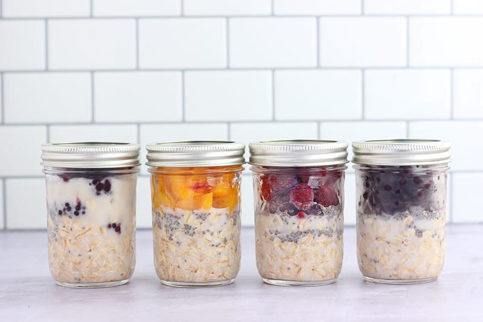

Do you ever feel that you don't have time to make anything for breakfast, so you just settle for a cup of coffee instead? Perhaps it's because you're too tired early in the morning, or maybe it's because you need to begin work ASAP. Well, overnight oats could not be simpler! Quickly prepare a few containers the night before (it only takes a few minutes) and let them sit in the fridge overnight while you sleep. Mornings have never been easier with overnight oats. Just add your favorite cereal toppings and you're sure to enjoy it!
For four servings:
Note: You may need to adjust the quantity of milk and size of containers when adding several optional ingredients.